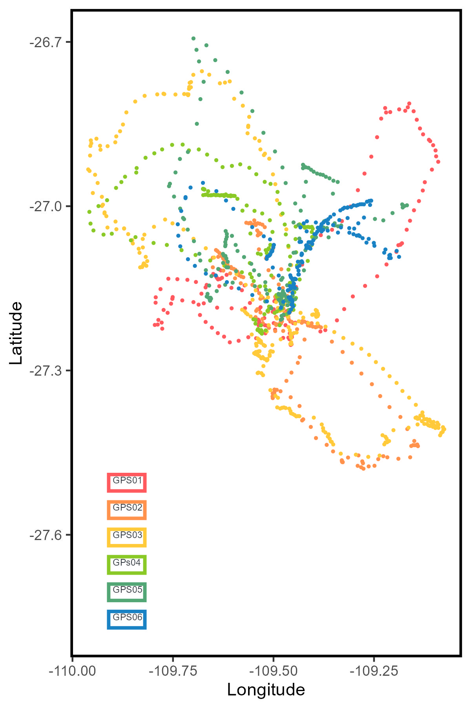

my_data<-(sula::GPS_preparado)Inside legend
R
ggplot2
English
Y2023
Create a custom legend using annotations of text and rectangles inside the plot.
Data
For this example, we will use the data provided in the package sula
The data is from tracked masked boobies at Rapa Nui
The data is already in tidy format
color1<-'#ff595e'
color2<-'#ff924c'
color3<-'#ffca3a'
color4<-'#8ac926'
color5<-'#52a675'
color6<-'#1982c4'
color7<-'#4267ac'
color8<-'#6a4c93'Plots
library(ggplot2)Lets create a plot where each color is a different individual and we gave specific colors.
Note that this can also be made with scale_color_manual.
However, for the example I separate them as you might be using layers.
my_plot<-ggplot() +
geom_point(data = subset(my_data,IDs=='GPS01'),aes(x=Longitude,y=Latitude),color=color1,size=0.5,alpha=1)+
geom_point(data = subset(my_data,IDs=='GPS02'),aes(x=Longitude,y=Latitude),color=color2,size=0.5,alpha=1)+
geom_point(data = subset(my_data,IDs=='GPS03'),aes(x=Longitude,y=Latitude),color=color3,size=0.5,alpha=1)+
geom_point(data = subset(my_data,IDs=='GPS04'),aes(x=Longitude,y=Latitude),color=color4,size=0.5,alpha=1)+
geom_point(data = subset(my_data,IDs=='GPS05'),aes(x=Longitude,y=Latitude),color=color5,size=0.5,alpha=1)+
geom_point(data = subset(my_data,IDs=='GPS06'),aes(x=Longitude,y=Latitude),color=color6,size=0.5,alpha=1)+
theme(
legend.position='none',
legend.spacing.y = unit(0.05, 'cm'),
legend.text=element_text(size=10),
legend.background = element_rect(fill='transparent',colour ="transparent"),
legend.box.background = element_rect(fill='transparent',colour ="transparent"),
legend.key = element_rect(fill = "transparent", colour = "transparent"),
panel.grid.major = element_blank(),
panel.grid.minor = element_blank(),
panel.background = element_blank())+
xlab('Longitude')+ylab('Latitude')+
theme(panel.border = element_rect(colour = "black", fill=NA, linewidth=1.5))
my_plotInside legend
Select the coordinates for the legend
legx<- -109.90
legy<- -27.4Add text
my_plot_wtext<-my_plot +
annotate(geom="text",x= legx, y=legy-0.1, label="GPS01",color="#343a40",hjust = 0, size=2)+
annotate(geom="text",x= legx, y=legy-0.15, label="GPS02",color="#343a40",hjust = 0, size=2)+
annotate(geom="text",x= legx, y=legy-0.2, label="GPS03",color="#343a40",hjust = 0, size=2)+
annotate(geom="text",x= legx, y=legy-0.25, label="GPs04",color="#343a40",hjust = 0, size=2)+
annotate(geom="text",x= legx, y=legy-0.3, label="GPS05",color="#343a40",hjust = 0, size=2)+
annotate(geom="text",x= legx, y=legy-0.35, label="GPS06",color="#343a40",hjust = 0, size=2)
my_plot_wtextAdd segment
my_plot_wtext +
annotate("segment", x = legx-0.01, xend = legx-0.04, y = legy-0.1, yend = legy-0.1,color = color1,linewidth=1)+
annotate("segment", x = legx-0.01, xend = legx-0.04, y = legy-0.15, yend = legy-0.15,color = color2,linewidth=1)+
annotate("segment", x = legx-0.01, xend = legx-0.04, y = legy-0.2, yend = legy-0.2,color = color3,linewidth=1)+
annotate("segment", x = legx-0.01, xend = legx-0.04, y = legy-0.25, yend = legy-0.25,color = color4,linewidth=1)+
annotate("segment", x = legx-0.01, xend = legx-0.04, y = legy-0.3, yend = legy-0.3,color = color5,linewidth=1)+
annotate("segment", x = legx-0.01, xend = legx-0.04, y = legy-0.35, yend = legy-0.35,color = color6,linewidth=1)Add rectangle
my_plot_wtext +
annotate("rect", xmin = legx-0.01, xmax = legx+0.08, ymin = legy-0.09, ymax = legy-0.12,color = color1,linewidth=1, fill="transparent")+
annotate("rect", xmin = legx-0.01, xmax = legx+0.08, ymin = legy-0.14, ymax = legy-0.17,color = color2,linewidth=1, fill="transparent")+
annotate("rect", xmin = legx-0.01, xmax = legx+0.08, ymin = legy-0.19, ymax = legy-0.22,color = color3,linewidth=1, fill="transparent")+
annotate("rect", xmin = legx-0.01, xmax = legx+0.08, ymin = legy-0.24, ymax = legy-0.27,color = color4,linewidth=1, fill="transparent")+
annotate("rect", xmin = legx-0.01, xmax = legx+0.08, ymin = legy-0.29, ymax = legy-0.32,color = color5,linewidth=1, fill="transparent")+
annotate("rect", xmin = legx-0.01, xmax = legx+0.08, ymin = legy-0.34, ymax = legy-0.37,color = color6,linewidth=1, fill="transparent")
You can of course use the legend, but this option is for me more easy to custom and move around the plot. Moreover, it allows you to include all kinds of annotations inside the plot.